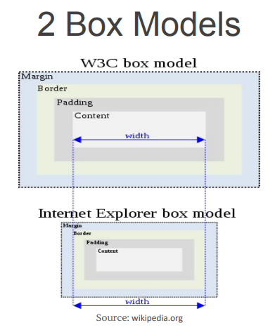
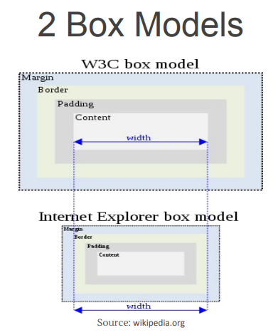

CSS box sizing property

Tell all browsers to use IE box model or W3C model.

Tell all browsers to use IE box model or W3C model.
box-sizing: content-box; box-sizing: border-box;
Fixed (px)
Elastic (em)
Fluid (%)
Using Min/Max Sizing